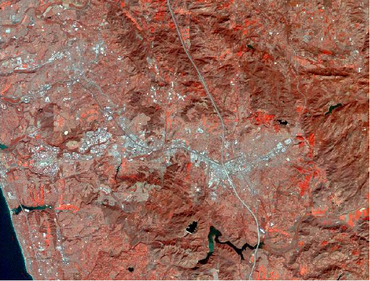

Now we can start assigning invisible bands to channels so that we can see what these invisible wavelengths have to show us about features on the ground.
| 1. We'll start off with a classic "color infrared" image, in which we assign the near infrared band to the red channel. To do this, click on the Red channel and assign Layer_4 to it. |
You'll see that the image no longer looks natural at all, like this:
Instead of shades of green dominating the image like we got with the natural color image, we're seeing shades of red instead. To get a really brilliant, bright red color the pixel has to have a near infrared reflectance near its maximum value (which is 255), and be near the minimum (which is 0) in the other two bands. Areas that are darker, more muted shades of red still have a greater amount of infrared radiation reflecting off the ground than green or blue light, but all three of the bands are at intermediate levels between 0 and 255.
You can confirm that this is the case using the "Identify" tool.
2. Select the "Identify" tool, and then click on pixels with
different colors.
|
Why is this useful? Because green, actively growing plants tends to reflect more strongly in the near infrared part of the spectrum than dead or dormant plants do. Color infrared images show this distinction much more clearly than a natural color image can - we can thus use color infrared images to not only find where the vegetated areas are, we can also tell healthy vegetation from less healthy vegetation.
And, since we're getting this information from LandSat satellites, we can see how the vegetation is doing over large areas, about once per month.
Color infrared is a very useful false color image type, but it's just one possibility. Move on to Step 4 to try out a couple more.